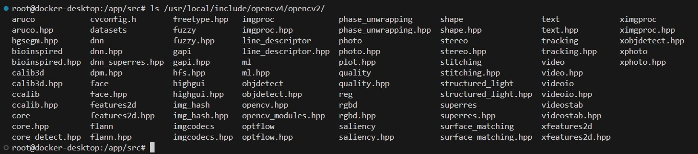
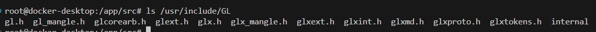
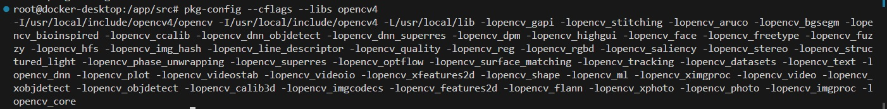
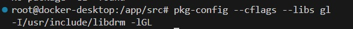
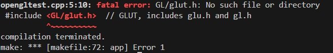

my experience stumbling around and trying to install OpenGL and getting it to work
-
So, I was trying to install OpenGl, and I couldnt get it to run initially. i was getting the following error.
opengltest.cpp:5:10: fatal error: GL/glut.h: No such file or directory
#include // GLUT, includes glu.h and gl.h
So, I tried finding the packages, and seeing why this happening and in the process i learned to following things.
-
Before this i got opencv to work, and 1 differnce i saw in opencv is that it its
files were stored in a differnt location namely :
/usr/local/include ,
where a lot of other packages including OpenGL were stored in /usr/include ,
in fact, previously when i tried installing boost as well, it was stored in
/user/include .
-
So i was going through the OpenCV4 directory , where the packages were accessed,
and found all the header files in
/usr/local/include/opencv4/opencv2/

-
Similarly, I found OpenGL's packages in
/usr/include/GL/ which ar as follows:

-
We need to compile these packages along with our own cpp files, and hence we need to "link"
these package header, and the path to the folders where these package headers and files are
present is included in the compilation command.
-
Before that, I am not sure about this but we may need to add the package location in
C_CPP_properties.json of vscode as well. So that it is it can trace the source, and wont show errors
Note : This step is probably not for the compilation / linking process.
-
To include this these package locations in the compilation command, certain tools like "pkg-config"
are used. for example, a working compilation command includes the opencv files by callin "pkg-config"
like so:
pkg-config --cflags --libs opencv4

-
Similarly, when i tried for OpenGL like so:
pkg-config --cflags --libs gl

-
Finally, coming to the error : the error i got was as follows :

if you look back at the headers available in the GL package, you will find that the glut.h header isnt present ! DUH! THAT'S WHY IT DOSENT WORK *FACEPALM*
-
Okay!, but now you understood, how you are including headers from different pacakges.
-
So I speculate that once we include the packages in the compilation command (using
pkg-config) we
the included package's headers are compiled, and we get relevant executables. (is this all linkage is?)
TBD